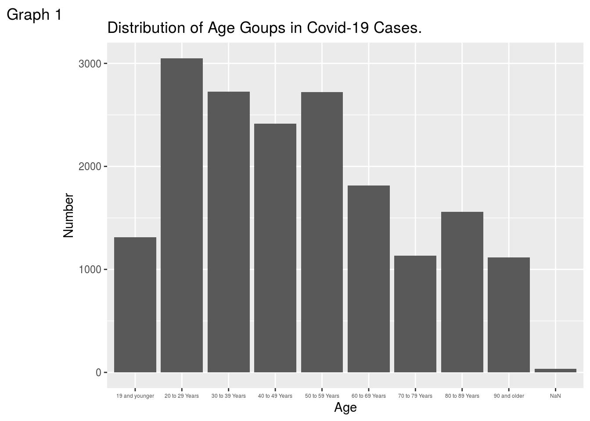
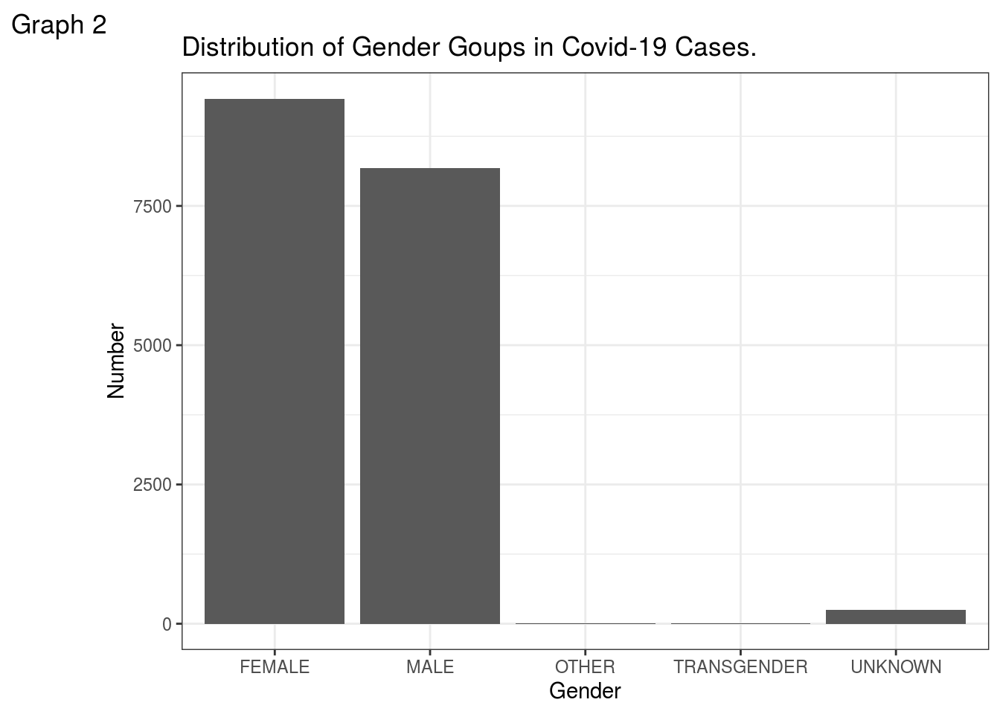
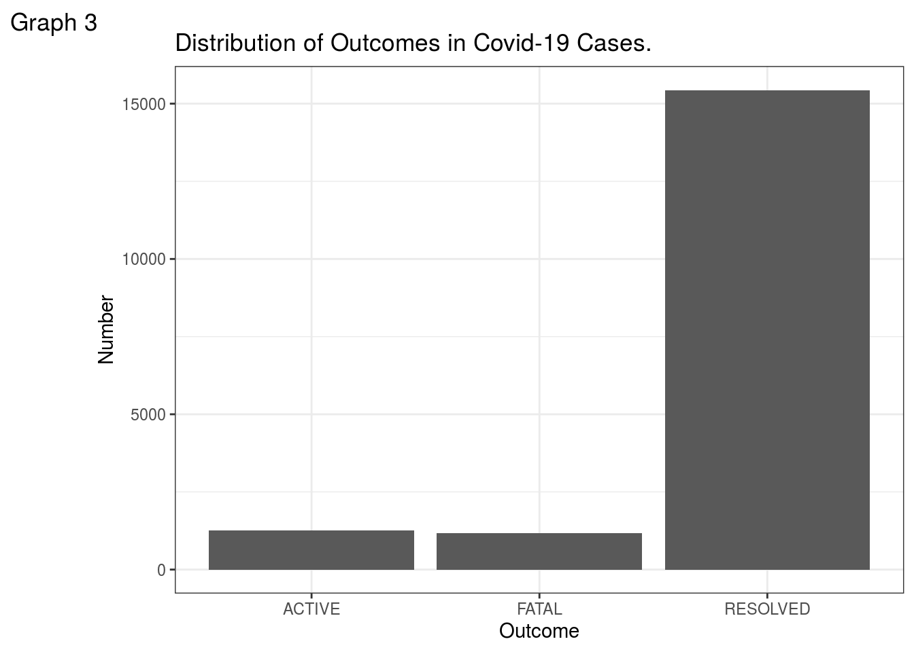
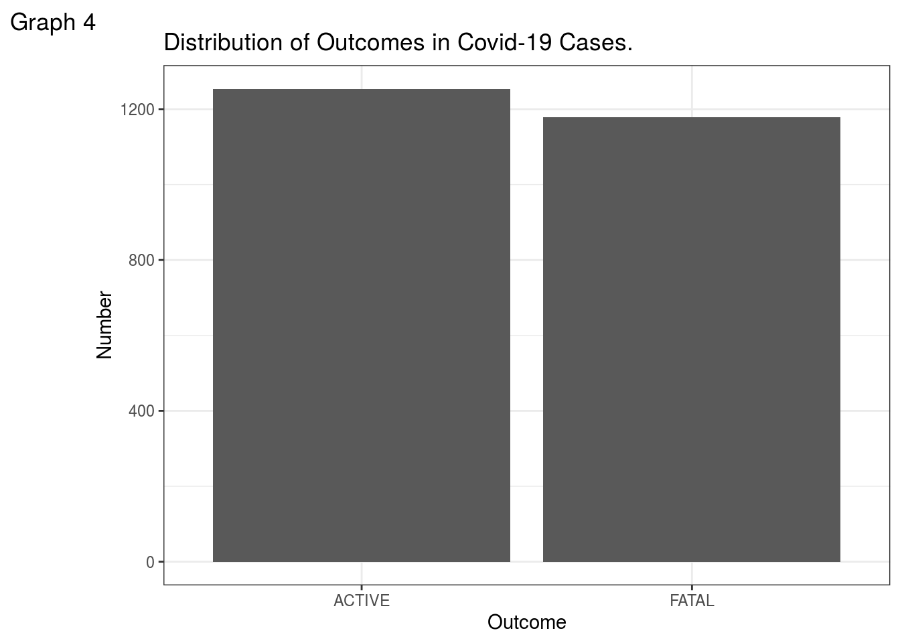
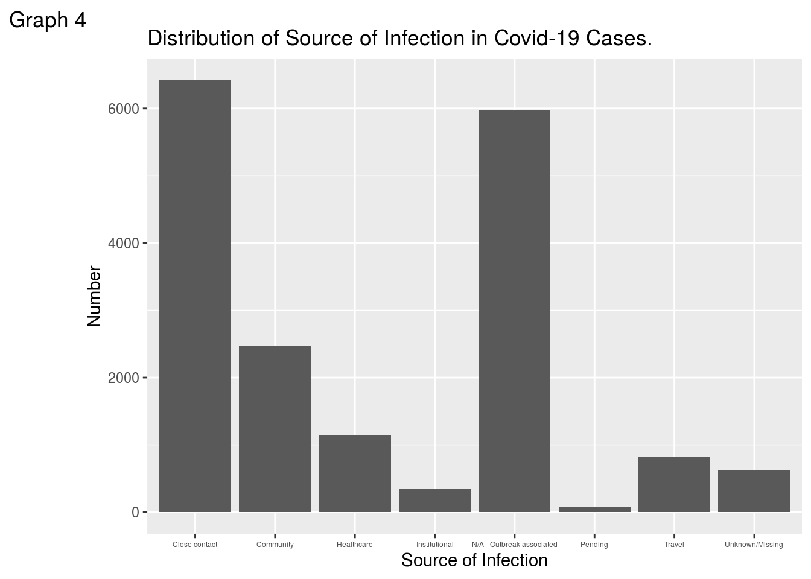

Code and data supporting this analysis is available at: https://chenj177.github.io/STA304/
Abstract
In this article, we investigated the covid-19 cases in Toronto. We want to demonstrate how covid-19 cases spread around Toronto, what age group has the highest number of cases, and the rate of severity in all cases, etc. Through analyzing the data from open data Toronto, we want to show people a comprehensive and detailed circumstances of this ongoing pandemic in Toronto.
Introduction
Do men or women more likely get infected by covid-19 in Toronto? How old are most covid-19 patients in Toronto? How likely covid-19 patients get hospitalized in Toronto? In this blog, we used data from Open Data Toronto, which contains data of covid-19 cases of this pandemic. In this data, it includes some information of either past or current covid-19 patients, such as their age group, gender, and neighbourhood, etc. Therefore, by using this data, we want to show you some facts about situation of covid-19 in Toronto.
Staristics of characteristics of covid-19 cases in Toronto
Visualization
To answer the questions we asked above, we are using several plots to demonstrate the result:
- How old are most covid-19 patients in Toronto?

As we can see by graph 1, the number of young patients between 20 to 29 is the highest in all age groups(total 3049 by Table 3), followed by age group between 30 and 39(total 2724 by Table 3). The peak of distribution is between age of 20 to 69.
- Do men or women more likely get infected by covid-19 in Toronto? 
From graph 2, it shows that more female(total 9427 by Table 5) get infected than male(total 8184 by Table 5) in Toronto. Thousand of more female infected than male.
- How many cases resolved, active or fatal?

By graph 3, it shows that more than 15,000 cases have been resolved. But, in this bar plot, the number of active and fatal cases is unclear. Hence, we plotted graph 4 and shows that over 1,200 cases is still active right now, and there are nearly 1,200 fatal cases in Toronto.
- What are the most sources of infections in Toronto?

From graph 5, it shows that most covid-19 cases in Toronto are infected by close contact and outbreak associated. It is important to keep social distancing and wear proper protections such as mask.
Discussion
From bar plots above, the peak of distribution of patients is between age of 20 to 69, which most at their age of labor force population. They have higher probability of socializing, commuting and working. Therefore, virus is easier to access them. The major sources of infection are caused by close contact(total 6419 by Table 4) and outbreak associated(total 5974 by Table 4). Thus, it is important to wear protection such as facial mask. Bloomberg reported a news of an outbreak in Seoul, South Korean, a woman with coronavirus visited a cafe and infect more than two dozen of people, but employees at the cafe who wore face masks are not infected.
From table 1 to 14 in the appendix, we can see the exact count and spread of covid-19 in Toronto. We find that postal code area of M9V has the highest counts of coronavirus infection. To be specific, neighbourhood Mount Olive-Silverstone-Jamestown has the highest count of infected cased, followed by neighbourhood West Humber-Clairville. Table 6 shows that more young men are infected than yooung women between age of 20 and 29. There are still 1254 active cases in Toronto right now and most of active cases living in neighbourhood of Waterfront Coummunities-The Island, followed by neighbourhood Niagara, York University Heights, Church-Yonge Corridor, which all of these neighbourhoods are populated and crowded.
By table 10 and 11, we can see that most of cases have ever been hospitalized are seniors, suggesting high risk of fatality of older population that get infected. Daniele and his colleagues’ study also proved our finding of higher risk of infection coronavirus of older people. By table 12,13,and 14, it shows that fatalities are high in hospitalized patients, at percentage of 541/(1403+541+46)=27.2%, once the situation worsen and patient is sent into ICU, the percentage increases to 168/(246+168+14)=39.3%. If the patient is intubates, the rate surges to 133/(155+133+5)=45.4%. Dr. Mohammad and his colleagues found the same result that higher rate of fatality is consistent with hospitalized covid-19 cases in Iran, the same as what we found in Toronto.
Weakness and next steps
We went through some simple analysis of coronavirus cases in Toronto. However, we didn’t build a statistical model to analyze the relationships between variables provided by Open data Toronto. How statistically, for example, age and outcome of covid-19 related? Is it statistically significant? The result remain unclear and need further professional analysis and study.
By showing some patterns of infection of coronavirus cases in Toronto, a few points need to be emphasized and discussed.
Should we perform more strict acts to stop the oncoming second waves?
Like Migita and Debanjan discussed, how can we protect fragile seniors better in this pandemic? How should our health care system get prepared in case of suddenly surging cases?
What can individuals do to stop the virus spread and how government educates, promotes and advocates citizens to do so? (e.g wear mask, reduce gathering and party, etc.)
References
Carrieri, D., Peccatori, F. A., & Boniolo, G. (2020). COVID-19: a plea to protect the older population. International journal for equity in health, 19(1), 72. https://doi.org/10.1186/s12939-020-01193-5
D’cruz, M., & Banerjee, D. (2020). ‘An invisible human rights crisis’: The marginalization of older adults during the COVID-19 pandemic - An advocacy review. Psychiatry research, 292, 113369. Advance online publication. https://doi.org/10.1016/j.psychres.2020.113369
Jalili, M., Payandemehr, P., Saghaei, A., Sari, H. N., Safikhani, H., & Kolivand, P. (2020). Characteristics and Mortality of Hospitalized Patients With COVID-19 in Iran: A National Retrospective Cohort Study. Annals of internal medicine, M20-2911. Advance online publication. https://doi.org/10.7326/M20-2911
Kim, H., & Kim, S. (2020, August 25). Starbucks Cafe’s Covid Outbreak Spared Employees Who Wore Masks. Retrieved September 28, 2020, from https://www.bloomberg.com/news/articles/2020-08-25/this-starbucks-in-south-korea-became-a-beacon-for-mask-wearing
Appendix
Table 1:
## # A tibble: 97 x 2
## FSA count
## <chr> <int>
## 1 M9V 1001
## 2 M3N 764
## 3 NaN 618
## 4 M6M 576
## 5 M9W 508
## 6 M9R 483
## 7 M1E 477
## 8 M3J 474
## 9 M9N 405
## 10 M1B 376
## # … with 87 more rowsTable 2:
## # A tibble: 141 x 2
## `Neighbourhood Name` count
## <chr> <int>
## 1 NaN 678
## 2 Mount Olive-Silverstone-Jamestown 564
## 3 West Humber-Clairville 558
## 4 Glenfield-Jane Heights 555
## 5 Downsview-Roding-CFB 522
## 6 York University Heights 488
## 7 Islington-City Centre West 415
## 8 Weston 368
## 9 Kingsview Village-The Westway 365
## 10 Black Creek 347
## # … with 131 more rowsTable 3:
## # A tibble: 10 x 2
## `Age Group` count
## <chr> <int>
## 1 20 to 29 Years 3049
## 2 30 to 39 Years 2724
## 3 50 to 59 Years 2720
## 4 40 to 49 Years 2416
## 5 60 to 69 Years 1813
## 6 80 to 89 Years 1557
## 7 19 and younger 1311
## 8 70 to 79 Years 1133
## 9 90 and older 1116
## 10 NaN 33Table 4:
## # A tibble: 8 x 2
## `Source of Infection` count
## <chr> <int>
## 1 Close contact 6419
## 2 N/A - Outbreak associated 5974
## 3 Community 2471
## 4 Healthcare 1142
## 5 Travel 830
## 6 Unknown/Missing 622
## 7 Institutional 344
## 8 Pending 70Table 5:
## # A tibble: 5 x 2
## `Client Gender` count
## <chr> <int>
## 1 FEMALE 9427
## 2 MALE 8184
## 3 UNKNOWN 250
## 4 OTHER 6
## 5 TRANSGENDER 5Table 6:
## # A tibble: 37 x 3
## # Groups: Client Gender [5]
## `Client Gender` `Age Group` count
## <chr> <chr> <int>
## 1 MALE 20 to 29 Years 1540
## 2 FEMALE 20 to 29 Years 1486
## 3 FEMALE 50 to 59 Years 1483
## 4 MALE 30 to 39 Years 1369
## 5 FEMALE 30 to 39 Years 1328
## 6 FEMALE 40 to 49 Years 1290
## 7 MALE 50 to 59 Years 1221
## 8 MALE 40 to 49 Years 1095
## 9 FEMALE 80 to 89 Years 967
## 10 MALE 60 to 69 Years 912
## # … with 27 more rowsTable 7:
## # A tibble: 3 x 2
## Outcome count
## <chr> <int>
## 1 RESOLVED 15440
## 2 ACTIVE 1254
## 3 FATAL 1178Table 8:
## # A tibble: 135 x 2
## `Neighbourhood Name` count
## <chr> <int>
## 1 Waterfront Communities-The Island 88
## 2 NaN 50
## 3 Niagara 41
## 4 York University Heights 39
## 5 Church-Yonge Corridor 34
## 6 Islington-City Centre West 34
## 7 West Humber-Clairville 31
## 8 Black Creek 29
## 9 Kingsview Village-The Westway 26
## 10 Mount Olive-Silverstone-Jamestown 25
## # … with 125 more rowsTable 9:
## # A tibble: 2 x 2
## `Currently Hospitalized` count
## <chr> <int>
## 1 No 17838
## 2 Yes 34Table 10:
## # A tibble: 9 x 2
## `Age Group` count
## <chr> <int>
## 1 80 to 89 Years 409
## 2 70 to 79 Years 380
## 3 60 to 69 Years 363
## 4 50 to 59 Years 312
## 5 90 and older 184
## 6 40 to 49 Years 162
## 7 30 to 39 Years 100
## 8 20 to 29 Years 57
## 9 19 and younger 23Table 11:
## # A tibble: 9 x 2
## `Age Group` count
## <chr> <int>
## 1 80 to 89 Years 416
## 2 90 and older 386
## 3 70 to 79 Years 219
## 4 60 to 69 Years 109
## 5 50 to 59 Years 36
## 6 40 to 49 Years 9
## 7 19 and younger 1
## 8 20 to 29 Years 1
## 9 30 to 39 Years 1Table 12:
## # A tibble: 3 x 2
## Outcome count
## <chr> <int>
## 1 RESOLVED 1403
## 2 FATAL 541
## 3 ACTIVE 46Table 13:
## # A tibble: 3 x 2
## Outcome count
## <chr> <int>
## 1 RESOLVED 246
## 2 FATAL 168
## 3 ACTIVE 14Table 14:
## # A tibble: 3 x 2
## Outcome count
## <chr> <int>
## 1 RESOLVED 155
## 2 FATAL 133
## 3 ACTIVE 5